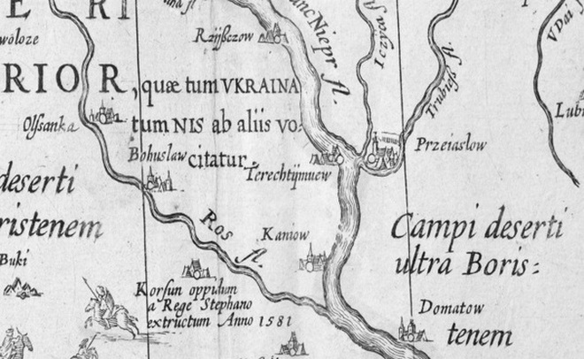
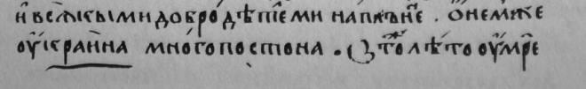
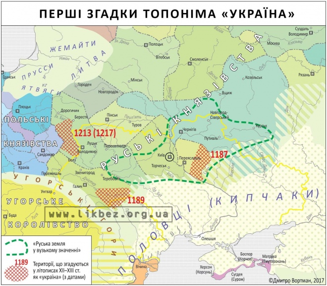
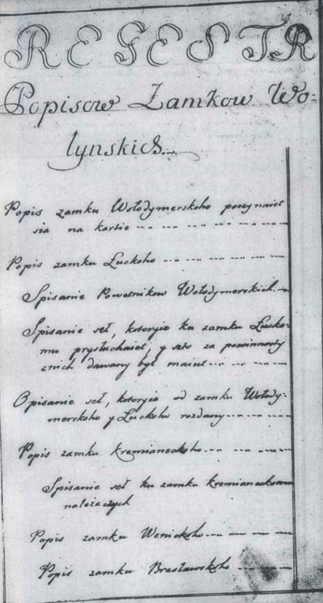
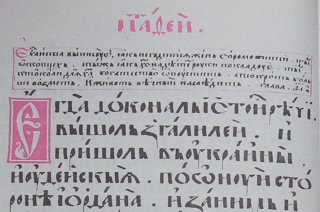

Слово і назва Україна: від Київського літопису до Богдана Хмельницького
Питання походження слова і назви «Україна» не є та й не має бути ключовим для української історії. Воно не є політичним, як це намагається представити російська пропаганда, а належить до сфери історії та мовознавства. Якою не була б відповідь, історія слова «Україна» не має та й не може серйозно впливати на нашу з вами ідентичність
6 КВІТНЯ 2021
Перші згадки
В українській історичній науці ще на початку ХХ століття міцно вкоренився стереотип, що перша згадка слова "Україна" - це 1187 рік. Але дане уявлення є абсолютно хибним.
Так, слово Україна кількаразово згадується у Київському та Галицько-Волинському літописах. Так, у Київському літописі за 1187 рік згадується про смерть переяславського князя Володимира Глібовича і пишеться, що по ньому плакали всі переяславці і "о нем же Оукраина много постона".
Проте важливо знати і пам'ятати, що джерелом для цитування всіх цих хронік є списки, що були укладені та написані значно пізніше. Провести текстологічне порівняння пізніших списків з протографами не можна, тому що оригінальні літописи просто не дійшли до наших днів.
І хоча сам факт згадки слова "Україна" у даних списках дає серйозні підстави вважати що воно вживалося ще в XI-XII століттях, говорити про це як доконаний факт все ж не варто.
Цитата "о нем же Оукраина много постона" з Хлєбніковського списку Іпатіївського літопису
Найдавнішим з-поміж списків, що дійшли до наших днів, є Іпатіївський. Аналіз паперу і почерків показав, що книгу було переписано близько 1425 року. Відповідно, саме цю дату слід вважати за старт грандіозної кар'єри слова "Україна".
Під 1187 роком у Іпатіївському літописі згадується про смерть переяславського князя Володимира Глібовича і пишеться, що "... плакашасѧ по немь вси Переӕславци . бѣ бо любѧ дроужиноу [.....] бѣ бо кнѧзь добръ . и крѣпокъ на рати . и моужьствомъ крѣпкомъ показаӕсѧ и всѧкими добродѣтелми наполненъ Ѡ нем же Оукраина много постони...".
Дана згадка є, мабуть, найвідомішою згадкою слова Україна. До неї апелюють як і прихильники версії первісного вживання слова Україна у значенні "окраїна", так і їх противники, які вважають що слово Україна вживалося у значенні "земля", "країна".
На думку перших, у даному випадку під "Оукраиною" мається на увазі Переяславщина як кордон руської цивілізації з половецьким степом або мова йде абстрактно про усе степове порубіжжя. На думку других – Переяславське князівство як князівство, земля.
А Сергій Шелухін припускав, що, враховуючи заслуги переяславського князя у відбитті нападів половців, "Оукраина" охоплює навіть Київщину та Чернігівщину.
Аналогічна ситуація з наступною згадкою у Іпатіївському літописі за 1189 рік, що з'явилася у зв'язку з походом Ростислава Берладника, а саме: "И еха и Смоленьска в борзѣ и приѣхавшю же емоу ко Оукраинѣ Галичькои". "Оукраину Галицку" трактують і як галицьку землю, Галицьке князівство, і як галицьке Пониззя, тобто галицьку межівну землю.
Під 1213 роком у Іпатіївському літописі згадується: "Данилоу же возвратившоусѧ к домови . и ѣха с братомъ . и приӕ Берестии . и Оугровескъ . и Верещинъ и Ст҃олпъ и Комовъ и всю Оукраиноу".
Зазвичай прихильники теорії первісного значення слова Україна оминають цю згадку, а от прихильники пояснення слова "Україна" як прикордоння трактують Україну у даному уривку як "пограничну волинську волость що було захопив краківський князь Лєшек Білий".
Цікавою і вартою уваги є згадка за 1268 рік, коли відбувся польський військовий наступ на Галицько-Волинське князівство, про який встигли попередити холмщаків "ляхове україняни"і ті встигли приготуватися до відсічі – "...и зане вѣсть бѧхоуть подали имъ Лѧхове Оукраинѧнѣ..."
Перші згадки топоніма Україна
Остання згадка слова "Україна" у Іпатіївському списку датується 1280 роком: "Посем же Левъ восхотѣ собѣ части в землѣ Лѧдьскои города на Въкраини...". Тут ми знову маємо проблеми з трактуванням: згадку можна пояснювати і як прагнення князя Лева Даниловича захопити польські прикордонні міста, і як намагання приєднати до складу Галицько-Волинської держави Люблінську землю.
У 1282 році польський князь Лєшек ІІ Чорний "...пославъ Люблинѣць взѧлъ бѧшеть оу него село на Въкраиници именемь Воинь". "Вкраїниця" скоріш за все є окремим словом, хоч і похідним від терміну "Україна".
Поселення Воїнь лежало на тодішнім пограниччі Русі з Польщею. Тож нескладно припустити, що під "Вкраїницею" мається на увазі прикордонна територія. Хоча сказати, що достеменно малося на увазі, складно.
Велике князівство литовське
Після кількох згадок у Київському та Галицько-Волинському літописах назва "Україна" з'являється знову. Цього разу – в офіційній документації, дипломатичному листуванні Великого князівства Литовського та Руського з іншими державами, різноманітних грамотах та привілеях.
Водночас у 1500 році великий князь литовський у листі до кримського хана Менглі-Гірея називає "нашими українами" Київську, Волинську та Подільську землі. Тобто тут поняття "україна" охоплює велику територію та поширюється на весь південь Великого Князівства Литовського.
А у привілеї 1539 року на спорудження замку на Київському Поліссі, (яке знаходилося доволі далеко від кордонів ВКЛ) його видання пояснюється корисністю таких замків на Україні.
У 1545 році було проведено грунтовну ревізію стану замків і населення на Волині, Східному Поділлі та Київщині. Реєстр склав окрему книгу "Литовської метрики" і отримав назву "Реєстр українських замків". І у "Ревізії Кременецького замку", що є частиною цього реєстру, також згадується слово "Україна".
"А со даваньи подвод и стацєм повєдають вси, ижь перед тьімь з віку Яко послы и гонцы на замокь Крємяницким нє хоживали, такь и подвод и Стацій жадєм з нихь ни с которьіх имінєм зємянскихь нє даивали, бо тєжь Колькодєсять літь, повідили, тая украина впустє лежала".
Тут під "україною" мається на увазі "земля", "занедбаний маєток". А у "Ревізії Брацлавського замку" 1545 року можна знайти такий вислів: "І ми, деї, будучи українні слуги государські...".
Того ж таки року у внесеному до "Литовської Метрики" "Листі государському Жигимонта" писалося: "Били нам чолом князі і панове земляни і вся шляхта, кияни та житомирці, котрі мають маєтності в Київському повіті, біля замку нашого Житомира... А на замок наш аби єси сторожу наймовал з корчемних пенезей яко в Черкасах і Каневі і по іншим замках українним."
Протягом 1556-1561 років сином протопопа М. Василевичем та архімандритом Пречистенського монастиря Григорієм у селі Двірці та місті Пересопниці було здійснено переклад Євангелія на замовлення княгині Анастасії Заславської. Нині воно добре відоме багатьом людям як Пересопницьке Євангеліє.
Пересопницьке Євангеліє
Для нас воно цікаве тим, що там слово Україна згадується паралельно у різних значеннях. Вперше увагу на згадки слова звернув Сергій Шелухин у своїй книзі. Також він зробив таблицю, де порівняв згадки слова Україна в Пересопницькому Євангелії з перекладами ідентичних фрагментів грецькою, латинською, чеською та церковнослов'янською мовами.
У фрагменті Євангелія від Марка "и ходиль по всей украини іорданскои проповедуючи крєщєнїє" під "україною" маються на увазі навколишні йорданські землі. У наступній згадці "и переехали до украины Гадаринскои" "україна" вживається у значенні "країна".
"Тогды тым, которыи бы били в земли жидовскои нехай утекают на горы а которыи в середині его (Єрусалиму) выидут, а которыи на украинах – нехай до него не входят".
Тут під "україною" маються на увазі околиці Єрусалиму, які виразно протиставляються центральній частині міста. Ось так завдяки Пересопницькому Євангелію можна побачити усю неоднозначність та неоднорідність терміну "Україна".

Уривок із Пересопницького Євангелія (1556) в якому трапляється слово
"україна": "пришол в україни иудейския".
У цьому фрагменті слово "україна" — край, межа, область (грецький
варіант ‛όρια, латинський fines, слов'янський предЂлы)
Цікавою і навіть унікальною згадкою є запис 1567 року у Сорбонні Адріана Загорікуса як студента "нації рутенської з України".
У 1568 році видатний руський князь Василь-Костянтин Острозький писав до урядників Київського повіту, що "Його Милість за наказом і листами нашими приповідними двісті коней на Україні хай ховає".
А на початку квітня 1569 року султан Османської імперії пише до Сигізмунда-Августа чергового листа, у якому зазначається: "...щоб на Україні своїм перебуваючим державцям суворо наказували..."
Висновки
Всі згадки слова "Україна" у Іпатіївському літописі при бажанні можна інтерпретувати як "прикордонна територія", а згадки під 1213, 1262, 1280 та 1282 роками важко трактувати як "земля" і значно легше пояснювати як "прикордоння".
Посереднім доказом того, що термін "Україна" не був однозначним з терміном "земля", є той факт, що в літописах ні разу не вжито словосполучення "Руськая україна", а натомість скрізь послідовно використовується термін "Руськая земля". Та й взагалі слово "Оукраина" вживається у Іпатіївському списку доволі рідко.
Згодом воно виринає у Великому князівстві Литовському. Завдяки згадкам слова "Україна" у ревізіях та листуванні з турецьким султаном, можна зробити твердий висновок, що за часів ВКЛ слово "Україна" позначало насамперед східні землі Великого Князівства Литовського та Руського і охоплювало Київщину, Брацлавщину та можливо й Волинь.
У вужчому розумінні Україна позначала східні кордони держави, у ширшому – південно-східні землі ВКЛ. Можливо, слово "Україна" вживається і у значенні земля, але спорадично.
Що ж до прикметника "українний", який, беззаперечно, є похідним від слова Україна, то він використовується і використовуватиметься, як ми це побачимо згодом, виключно у значенні "порубіжний", "прикордонний".
Після Люблінської унії 1569 року слово Україна зазнало певної еволюції. Слово Україна міцно закріпилося в офіційній документації Королівства Польського. Імовірно, причиною цього стала діяльність Руської Канцелярії. Воно стало позначати не тільки ті руські землі, що увійшли в Корону Польську в 1569 році, а й ті, що були частиною Корони Польської задовго до унії.
Також термін Україна вперше з'явився на географічних мапах. Було видано низку творів, темою яких був захист України та східних земель Речі Посполитої. Потреба захисту східних земель Речі Посполитої та постійні конфлікти з татарами надали цій назві емоційного забарвлення і призвели до того, що подекуди слово Україна стало синонімом Вітчизни, рідної землі.
А з розвитком козацтва, слово Україна стало вживатися в козацьких листах та універсалах. В подальшому це спричинило ще більшу еволюцію назви Україна.
Термін "Україна" не мав лише одне чітко визначене значення. Слово Україна з самого початку вживалося у значенні "фронтир". Фронтир – це водночас і кордон, і територія, подекуди дуже значна за обсягами. Вживалося слово "Україна" і у значенні частини цілості, землі, але зрідка. Можливо, дане значення виникло на основі першого.
Також слід враховувати й контекст: хто, де і коли вживає цей термін. Так, для короля Стефана Баторія Україною були Руське, Волинське, Київське, Подільське та Брацлавське воєводства, для авторів карти Великого князівства Литовського 1613 року – це землі на правому березі Дніпра від Києва до Канева.
Для гетьмана Івана Куцковича Україна – це землі від Могилева до гирла Дніпра. Як влучно підмітила Наталя Яковенко, Україна "...могла дробитися на низку "Україн"...". Робилося це для більш точної локалізації. Проте все таки слід відмітити, що абсолютна більшість згадок слова Україна стосується саме східних руських земель Речі Посполитої а до того – Великого князівства Литовського.
Ніхто не називав Україною західні прикордонні землі Речі Посполитої поблизу Гданська чи Познаня. Через це Україна поступово ставала назвою історико-географічного краю, регіональною назвою на кшталт Брацлавщини, Волині чи Поділля.
Все змінило повстання Хмельницького, завдяки якому перед цією назвою відкрилися величезні перспективи. Україна стала охоплювати руські землі аж до Вісли, це слово міцно вкоренилося в думах і народних піснях, а завдяки праці та картам Боплана воно стало широко знаним і за кордоном. Тож з другої половини XVII століття ми вже маємо Україну саме як "країну".